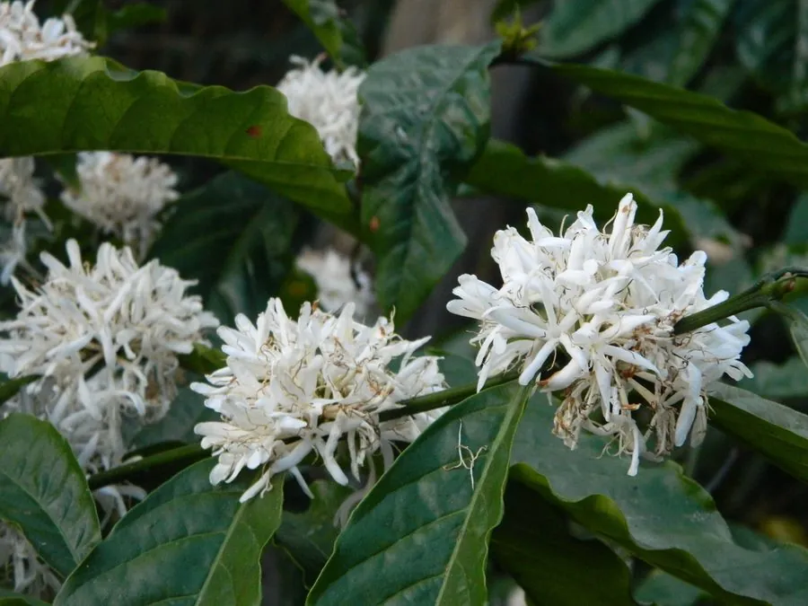

农作物与经济植物 · 植物界
咖啡 Coffea arabica

咖啡的种子烘焙磨粉后可冲泡成香浓饮品，阿拉伯咖啡风味柔和，是世界贸易量最大的农产品之一，也是重要的经济作物。
- 分类
- 门被子植物门纲双子叶植物纲目龙胆目科茜草科属咖啡属
- 栖息环境
- 海拔 1000–2000 m 的热带山地，喜温暖湿润、半阴与排水良好环境
- 地理分布
- 原产埃塞俄比亚高原，现主产于巴西、哥伦比亚、埃塞俄比亚等国
- 保护级别
- 暂无评估（栽培作物）；部分野生咖啡种群受威胁
物种志
咖啡是茜草科常绿灌木或小乔木，株高 3–5 m，野生可更高，栽培时多修剪至 2–3 m。叶对生，革质，椭圆形，深绿色，有光泽。花白色，五瓣，香气浓郁，多簇生于叶腋，花期集中。果实为浆果，未熟时绿色，成熟后呈深红色，形似樱桃，内含两粒扁平的种子，即咖啡豆。种子经脱皮、发酵、干燥和烘焙后，才能散发出浓郁的香气。
阿拉伯咖啡原产埃塞俄比亚高原，传说当地牧羊人发现羊吃咖啡果后精神亢奋，此后咖啡逐渐被人类利用；15 世纪经也门传入阿拉伯半岛，再传播到欧洲和美洲。它喜温暖、湿润、半阴的环境，适宜在海拔 1000–2000 m 的山地栽培，耐寒性较差，易受叶锈病影响，目前以杂交和抗病品种改良为主。咖啡豆富含咖啡因，可提神醒脑；全球咖啡种植支撑着许多热带国家的经济。
形态与习性
- 株高3–5 m，栽培时常修剪
- 叶对生，革质有光泽
- 花白色五瓣，香气浓郁
- 果实深红色浆果，含两粒种子
- 适宜海拔1000–2000 m 的山地
- 主要成分咖啡因
- 原产地埃塞俄比亚高原
趣味知识
- 同一株咖啡上的果实成熟时间不一致，优质咖啡常需人工分批采摘。
- 咖啡果成熟时形似红樱桃，所以又叫“樱桃咖啡”。
- 咖啡豆的香气来自烘焙过程中的美拉德反应，生豆几乎没有香味。